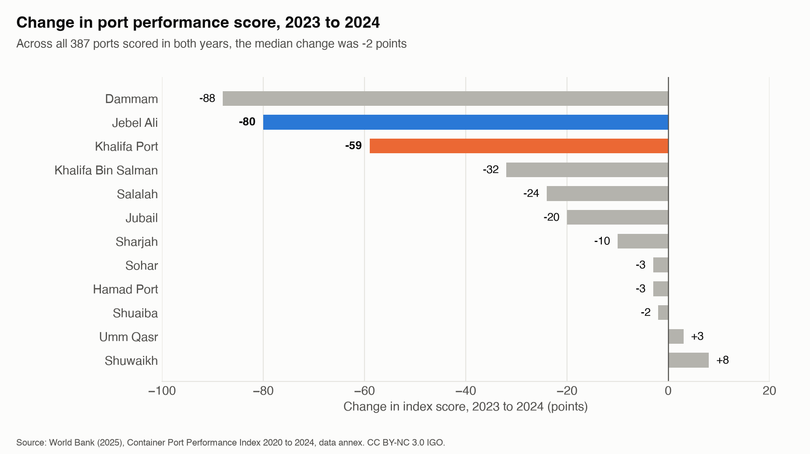

Jebel Ali's port-performance score fell 80 points in its busiest year since 2015. Where did ship time go?
One-page summary · Abderrahmane Messaoudi, Industrial Engineering & Engineering Management, University of Sharjah · github.com/dodo5037/uae-ports-benchmark
Answer
Both UAE container hubs lost more ground in 2024 than the Red Sea crisis alone explains, and at both an unusually large share of ship time passes before the ship reaches its berth. A terminal operator should measure waiting-for-berth per ship call before choosing between scheduling fixes and new capacity. The data shows where to look; it does not prove the cause.
Data and method
World Bank Container Port Performance Index, 2020 to 2024 edition (2025; 403 ports). It scores how long container ships spend in port, compared with ships of the same size and number of container moves. 0 is the 2024 world average; higher means less time in port. I took all 12 ports of the World Bank's "Arabian Gulf" region from the published annex without changing any value, and added Jebel Ali's 2024 volume and stated capacity from DP World's release of 19 February 2025.

Key numbers
| Port | 2023 | 2024 | Rank of 403 | Before berth |
|---|
| Jebel Ali | 73 | -7 | 262 | 33% |
| Khalifa Port | 105 | 46 | 68 | 41% |
| Sharjah | 20 | 10 | 155 | 21% |
| Hamad Port | 128 | 125 | 11 | 22% |
| Salalah | 141 | 117 | 15 | 36% |
| Dammam | 97 | 9 | 161 | 30% |
- Median change across 387 ports: -2 points. Only 21 ports fell further than Jebel Ali.
- Typical port: 21% of ship time before berth (median of 403).
- Jebel Ali: 15.5 million TEU against 19.4 million of stated capacity, about 80% (my calculation).
- Singapore: record 40 million TEU in 2024, score 88, rank 29 (report p. 37).
Recommendation
- Collect per-call data for 2023 and 2024: hours at anchor, hours at berth, arrival against schedule, by week.
- Test whether waiting rose in the weeks with the most volume or the most off-schedule arrivals.
- If it did, start with scheduling (agreed berthing times shared with carriers, berth windows: report pp. 35, 37) before capacity.
Limits
- The index gives no causes (report p. 52) and no hours: one score and one ratio per port per year.
- "Time before berth" is a ratio: a port that unloads fast also scores high (Salalah, 36%, ranks 15th).
- One data provider (S&P Global via the World Bank). Khor Fakkan and Fujairah are not in the index. No Khalifa Port volume figure is used.
- News sites reported Jebel Ali as 26th; the World Bank's annex says 262nd. This summary uses the annex.
Sources: World Bank, 2025. The Container Port Performance Index 2020 to 2024: Trends and Lessons Learned. Washington DC. CC BY-NC 3.0 IGO (data annex; pp. 35, 37, 49, 52, 53, 63, 64). DP World, "DP World records highest cargo volumes at Jebel Ali Port since 2015", 19 February 2025.